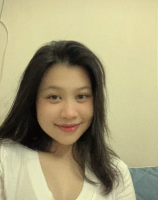

Lan Anh

Chúc mừng sinh nhật, Lan Anh 🎂
Hôm nay là ngày đẹp nhất trong năm — không phải vì trời đẹp, mà vì đúng ngày này nhiều năm trước, thế giới có thêm em.
Cảm ơn em vì đã xuất hiện, vì những ngày bình thường nhất cũng thành đáng nhớ khi có em ở đó. Cảm ơn em vì đã kiên nhẫn, đã dịu dàng, và đã chọn ở lại bên anh.
Anh biết cái nghề em đang theo không hề nhẹ. Học điều dưỡng là học cách thức khuya, học cách chịu đau thay người khác, học cả những thứ mà người ngoài nhìn vào chẳng bao giờ thấy. Anh thương em ở chỗ đó — em chọn một việc mà phần vất vả thì mình giữ, phần dễ chịu thì để lại cho người ta.
Chúc em qua hết những kỳ thi, những ca trực, những buổi đi lâm sàng về mệt rã rời — rồi cầm được tấm bằng trên tay đúng như em mong. Ngày em mặc áo tốt nghiệp, anh nhất định có mặt.
Và anh tin em sẽ làm nghề rất tốt. Người bệnh có thể quên tên bác sĩ, nhưng họ nhớ rất lâu người đã ở cạnh lúc họ yếu nhất — người đỡ họ ngồi dậy, người nói một câu tử tế giữa đêm. Em vốn dịu dàng sẵn rồi, chỉ cần giữ được điều đó qua những ngày mệt nhất thôi.
Anh không chúc em điều gì to tát đâu. Anh chỉ mong tuổi mới của em nhẹ nhàng: ngủ đủ giấc, ăn ngon miệng, bớt lo nghĩ, và luôn có người ở cạnh mỗi khi em cần — anh xin nhận phần đó.
Sinh nhật vui vẻ nhé, cô gái của anh. Thương em nhiều lắm.
- 🌸Luôn xinh đẹp và khoẻ mạnh như hôm nay
- ✨Mọi điều em mong đều lần lượt thành thật
- ☕Ngày nào cũng có một lý do nho nhỏ để cười
- 🤍Và luôn biết rằng em được thương rất nhiều